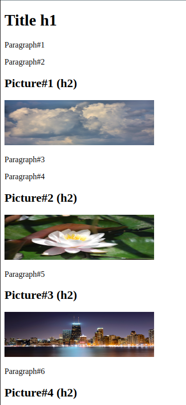
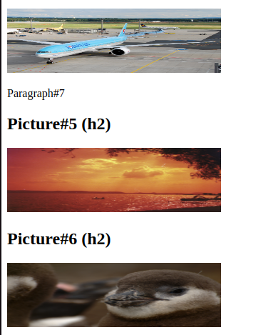
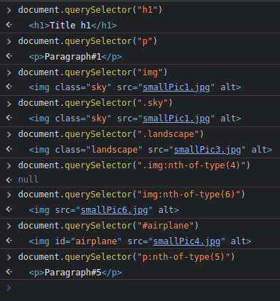
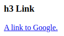
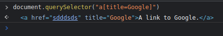
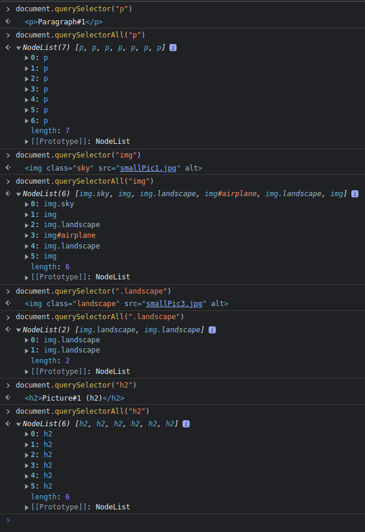
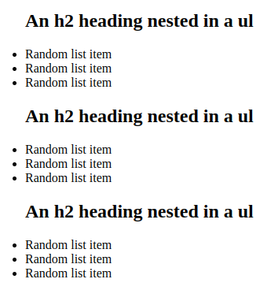
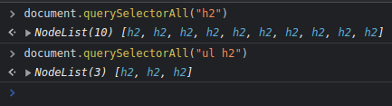

This helps us access and select Ids, tag names and class names.
We will be returned the first match of what we request.
We must use the CSS syntax:
We can also access other matches by using ("img:nth-of-type(3)")
*Example for 4th image match.
Here we have an example.
Picture 1 has a class of "sky".
Picture 3 and 5 have a class of "landscape".
Picture 4 has an id of "airplane"
We have 7 p elements and 6 img elements.
 We can access specific ids, elements and classes:
NTH OF TYPE USED FOR ELEMENTS, NOT IDS OR CLASSES.
WE WILL GET THE FIRST MATCH FOUND.
We can also access an element by its attribute.
Here we have a link, its title is Google.
 It returns a collection of matches, instead of the first match.
It will do so in the common Array-like collection of JS objects we've seen before!
We can also look for nested elements, with the descendant selector.
The syntax is simply a space between the parent and child element.
We are on the same webpage as before, there are a total of 10 h2 headings.
But only 3 h2 headings are nested inside an unorganized list.
 We can hover over the object from the collection we are returned to see where exactly on the page it is!
We can also iterate over the returned collection by saving it to a variable.
We can access a specific element type like this:
const checkbox = document.querySelector("input[type=checkbox]")